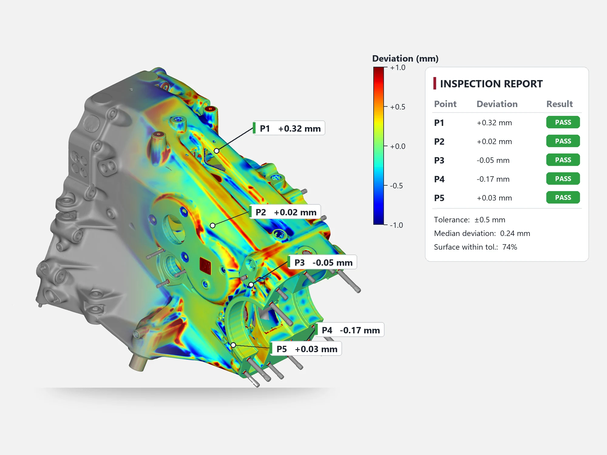

Digital Metrology
Compare manufactured parts to their CAD — to the micron.

We inspect manufactured parts by scanning them and comparing the result against the nominal CAD. Colour deviation maps, GD&T checks and first-article reports show exactly where a part is in or out of tolerance — fast, and without contact.
Colour deviation maps
Full-surface comparison against CAD, instantly showing where material is over or under.
GD&T inspection
Flatness, position, profile and more, measured and reported against the drawing.
First-article inspection
Complete FAI reports for new parts, tools and suppliers.
Trend analysis
Repeated inspections track tool wear and process drift over time.
Four steps, no surprises.
- 01BriefTell us about the part, product or space and what you need from digital metrology.
- 02Capture & modelOur engineers scan, model or prepare your data with the right tools for the job.
- 03ReviewYou check the result against your requirements; we refine until it is right.
- 04DeliverFinal files, parts or reports delivered in the formats your team uses.
Digital Metrology projects.
Scanners we use & sell.


Digital Metrology FAQ.
Is 3D scanning accurate enough to replace a CMM?
For most castings, moulded parts and freeform surfaces, yes. For micron-level machined features, a CMM is still the better tool, and many companies combine both.
What do you need from us for an inspection?
The part (or access to it on site), the CAD model, and the drawing or tolerances to check against. If there is no CAD, we can compare two parts against each other, or against a "golden" sample.
How long does a 3D inspection take?
Scanning a typical part takes minutes to an hour. Reporting depends on how many features and GD&T checks you need.
Have a part, a building or an idea?
Tell us what you need — we usually reply within one working day.